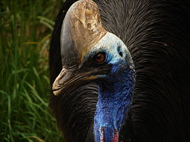

Southern Cassowary
They have a reputation of being the world's deadliest bird!
- Scientific Name: Casuarius casuarius.
- Length: 127 - 170 cm.
- Height: 150 - 180 cm.
- Weight: 17 - 70 kg.
- Lifespan: 18 - 20 years.
- Habitat: Tropical rainforests.
With a unique blue face, black plumage, and a long neck, the Southern Cassowary is a large flightless bird, found in Indonesia, Papua New Guinea, and northeastern Australia. They predominantly eat fruits, but their diet also includes flower, fungi, snail, and small animals. Evidence suggests that people in New Guinea reared the cassowary as much as 18,000 years ago, long before the domestication of chickens.